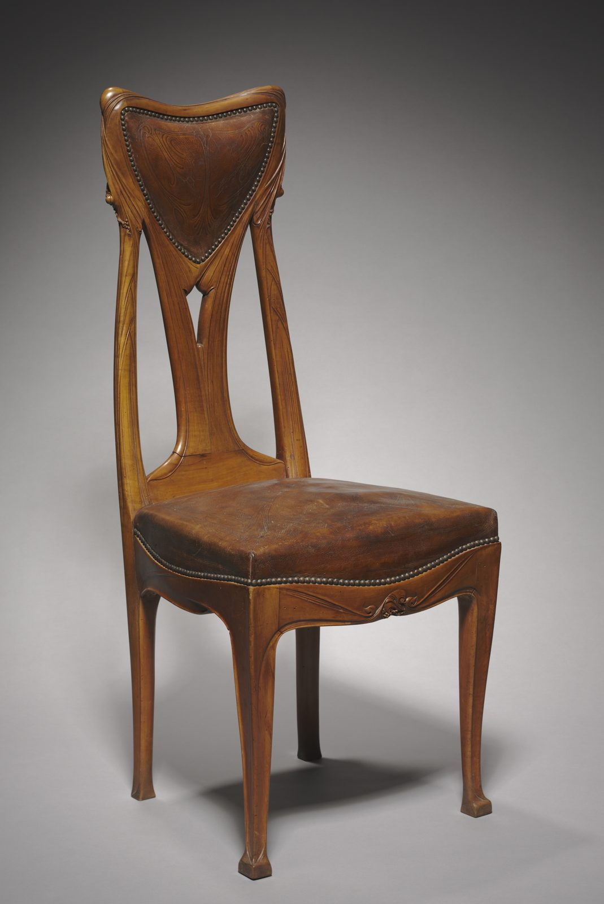

References / Furniture / 330
Side chair by Hector Guimard
A pearwood chair whose back posts rise, split, and flow into a leaf-shaped leather panel, with no joint or edge left straight.
- Source
- Cleveland Museum of Art: Chair, 1985.96
- Creator
- Hector Guimard
- Made
- c. 1907
- Style
- Art Nouveau (agent-proposed, not yet reviewed by a person)
- Moods
- Organic, flowing, sculptural
- Evidence
- Downloaded and inspected the Cleveland Museum of Art open-access image of object 1985.96 (2272 × 3400 px print file). Read the object record through the museum’s open-access API.
- Reviewed
- Rights
- Open license, stored. License: CC0-1.0. Rights policy
Context
The Cleveland Museum of Art records the chair as pearwood with a tooled leather back and seat, 108 × 45.4 × 50.4 cm, French, c. 1907, by Hector Guimard (1867–1942). CMA 1985.96.
Wikipedia: after visiting Horta’s Hôtel Tassel, Guimard built the Castel Béranger (1895–1898), among the first Paris buildings in the new style, and his Métro entrances brought it to the visitors of the 1900 Exposition. Wikipedia: Art Nouveau.
Observed
- The back is a pointed, inverted-triangle shield with curved sides, filled with a brown leather panel edged by a row of brass nails.
- The two back posts swell as they rise, bend inward, and merge into the top rail; carved grooves run along them like the veins of a stem.
- A single central splat drops from the back panel, splits into a narrow pointed opening, and joins the seat rail.
- The front seat rail dips in the middle and carries a small carved scroll ornament.
- The legs taper and flare slightly into small pad feet. No edge on the frame is straight.
- The photograph shows the chair in three-quarter view on a gray ground.
Why it belongs
The chair turns the rubric’s leaf-shaped panel into structure: the back is literally a leaf held up by its stalk.
The palette is only wood brown, leather brown, and brass, which fits the style’s earthy colours.
Borrow
Shape a card or badge as a pointed shield with softly curved sides.
Carry a thin groove or line along a curved edge so the edge reads as a stem.
Measured
Machine-extracted by tools/image-traits.py on . Full measurement.
- Mean chroma
- 0.06
- Palette
- #aca8a7 19%
- #bbb7b6 15%
- #8a8785 11%
- #3c3939 10%
- #9f9c9c 9%
- #653b23 4%
- #4e3122 4%
- #4f4d4b 4%

